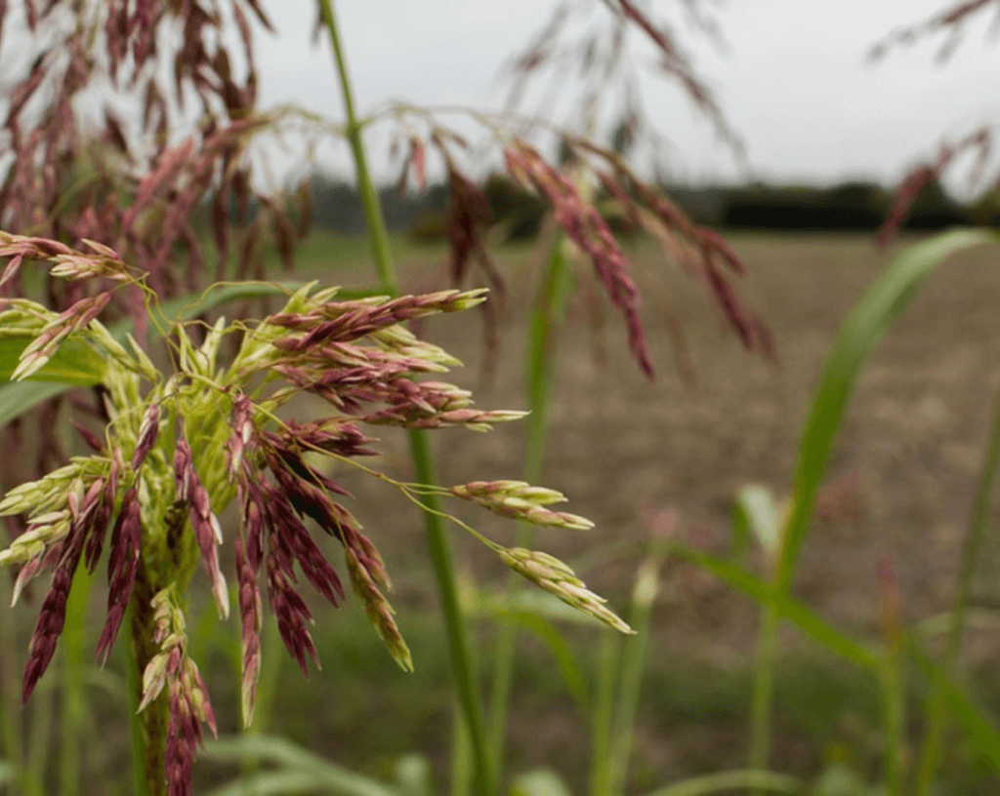

Однодольные (злаковые)

Двудольные
Гумай / Сорго алеппское
Sorgum halepense

Семейство:
Злаки
Подтип:
Многолетние
Биологическая группа:
Корневищные
Описание:
Стебель прямой, высотой до 1–2 м, толщиной до 1 см. Листья линейно-ланцетные, длинные, шириной 1–2 см, голые, по краям зубчатые. Первый лист всходов длиной 20–25 мм и шириной 3–4 мм, тёмно-зеленый, голый, только по краю тонкошероховатый. Соцветие — метёлка длиной до 40 см, раскидистая, многоколосковая. Колоски двуполые, сидячие, яйцеподобные, опушённые, с остью длиной до 14 мм. Корневая система в виде ризомы. Проникает в грунт на глубину до 80 см. Корневища бывают трех типов: первичные, располагающиеся в почве вертикально, вторичные — горизонтальные и третичные, или запасные.
Биология:
Максимальная плодовитость — 8000 зерновок. Глубина прорастания — до 10–12 см, отрезки корневищ приживаются на глубине до 30 см. Жизнеспособность семян в почве — до 5 лет. Температура прорастания: минимальная — 10–12 °С, оптимальная — 30–35 °С. Корневища вымерзают при температуре –15 °С. Всходит в марте — мае. Цветёт в июле — августе. Плодоносит в августе — октябре.
Препараты для защиты

Голден Ринг
Контактный препарат для предуборочной десикации товарных и семенных посевов сельскохозяйственных культур
дикват-ионы, 150 г/л. Содержит дикват в виде дикват-дибромида, 280 г/л (150 г/л в пересчете на дикват-ионы)
Ирвин
Почвенный гербицид широкого спектра для защиты подсолнечника и сои.
С-метолахлор + тербутилазин, 312,5 + 187,5 г/л
Каспер
Послевсходовый гербицид с почвенным эффектом для контроля злаковых и двудольных сорняков в посевах зернобобовых и ИМИ подсолнечника.
имазамокс, 40 г/л
Легион
Селективный послевсходовый граминицид для широкого спектра сельскохозяйственных культур.
клетодим, 240 г/л
Легион Комби
Селективный послевсходовый граминицид для широкого спектра сельскохозяйственных культур.
клетодим, 240 г/л
Лигат
Комбинированный граминицид для широкого спектра сельскохозяйственных культур.
клетодим + хизалофоп-П-этил, 150 + 65 г/л
Маис
Послевсходовый гербицид для борьбы с двудольными и злаковыми сорняками в посевах кукурузы и картофеля
римсульфурон, 250 г/кг
Суперкорн
Послевсходовый системный гербицид с почвенным действием для контроля всего спектра сорной растительности на кукурузе.
мезотрион + никосульфурон + тифенсульфурон-метил, 150 + 60 + 11,25 г/л
Тапир
Гербицид для уничтожения широкого спектра двудольных и злаковых сорняков в посевах сои и гороха
имазетапир, 100 г/л
Тапир Гибрид
Послевсходовый гербицид широкого спектра действия для защиты гибридов подсолнечника, устойчивых к имидазолинонам.
имазетапир + имазапир, 50 + 20 г/л
Таргет супер
Селективный послевсходовый гербицид для борьбы со злаковыми сорняками в посевах сельскохозяйственных культур
хизалофоп-П-этил, 51,6 г/л
Тотал
Универсальный гербицид сплошного действия.
глифосат (изопропиламинная соль), 360 г/л
Тотал 480
Универсальный гербицид сплошного действия.
глифосат (калиевая соль), 480 г/л
Хорс Д
Послевсходовый гербицид для контроля двудольных и злаковых сорняков на кукурузе
дикамба + никосульфурон, 200 + 50 г/л
1
2
3
4
5